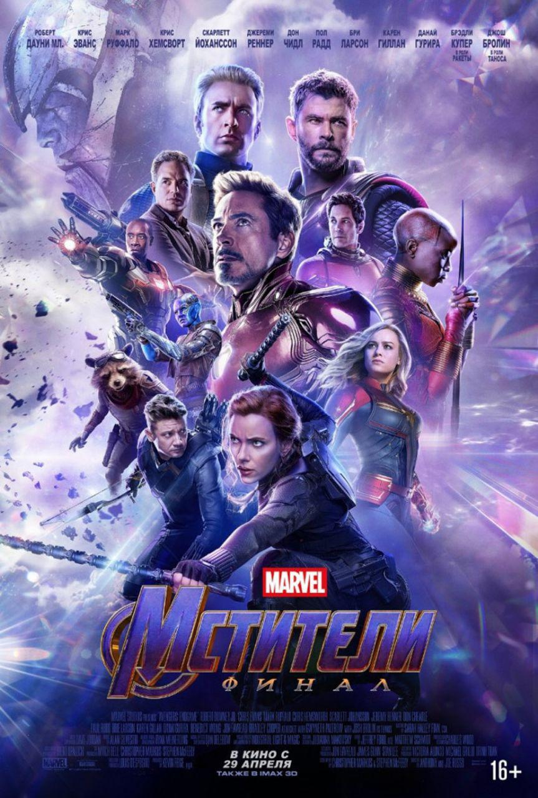

После событий Войны бесконечности, половина вселенной уничтожена. Спустя три недели призванная на помощь Кэрол Дэнверс спасает дрейфующих в космосе Небулу и Тони Старка и перемещает их на Землю. С ними объединяются Чёрная вдова, Халк, Стив Роджерс, Ракета, Тор и Воитель. Команда начинает разрабатывать план спасения, но оказывается, что Камни Бесконечностиуничтожены Таносом. Тор обезглавливает его.
Проходит пять лет. Команда Мстителей, перешедшая к мирной жизни, снова собирается вместе. Примкнувший к ним Человек-муравей рассказывает об успешных попытках перехода в квантовый мир. Изучая его, Мстители приходят к выводу, что в нём возможны перемещения во времени. Тони Старк собирает работающий прототип машины времени.
Мстители разделяются на группы и собираются найти и собрать Камни в прошлом. Бэннер, Роджерс, Лэнг и Старк отправляются в 2012 год, ко времени битвы за Нью-Йорк за камнями Времени, Разума и Пространства. Из-за того, что Локи удаётся захватить Тессеракт, Роджерс и Старк перемещаются в 1970 год, где забирают Тессеракт и новые частицы Пима, чтобы вернуться назад. Ракета и Тор перемещаются за камнем Реальности в Асгард, Бартон и Романофф — за камнем Души на Вормир. Однако этот камень можно получить только в обмен на жизнь, и Наташа жертвует собой. В Мораге 2014 года Небула и Воитель находят камень Силы. Из-за присутствия двух Небул в одном времени и пространстве между ними возникает связь, и Таносу становятся известны планы Мстителей. Он решает заменить Небулой из прошлого Небулу из будущего и заполучить собранные камни, а затем уничтожить всех живых существ во Вселенной и заселить её заново.
Собрав все камни вместе, Халк надевает перчатку и возвращает к жизни всех уничтоженных щелчком. Небула из прошлого включает портал, через который проходит корабль Таноса. Он уничтожает базу Мстителей и отправляет верную ему Небулу за перчаткой с камнями. Мстители выбираются из руин и атакуют Таноса. Тот выпускает свою армию, а на помощь Мстителям приходят те, кто вернулся к жизни. Начинается сражение. Мстители пытаются отправить перчатку с камнями в прошлое, но Танос перехватывает её, надевает и пытается щёлкнуть пальцами. Ему мешают Кэрол Дэнверс, а затем Тони Старк, который забирает камни и сам щёлкает пальцами. Танос и его армия уничтожены, но гибнет и Тони Старк.
В финале происходят похороны Тони Старка. Стив Роджерс отправляется в прошлое, чтобы вернуть камни в правильное время, но решает не возвращаться назад и провести остаток жизни с Пегги Картер, появившись в настоящем времени стариком.
